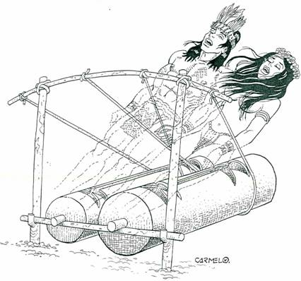

Mucho antes del descubrimiento de america, en las regiones selvaticas del Amazonas, Putumayo y Caqueta pobladas de tribus indígenas, la familia huitoto, utilizaba un instrumento de comunicacion, al que llamaban Maguaré.
Se escogía un hombre joven, para derribar el árbol para fabricar el Maguaré (o juai ) en un lapso no superior a 30 dias, durante los cuales no podia ser visitado por mujer alguna y tampoco podia hablar con nadie, no deberia separarse del árbol.
Que habria de convertirse, en dos troncos, simbolizaban el hombre y la mujer, el mas grande representaba la madre en gestacion.
Idearon un código de señales sonoras, cubriendo distancias de más de 20 kilómetros, anticipándose a la utilizacion de las ondas electromagnéticas (1865 ), al uso de las microondas, al código morse y a la emision de ondas hertzianas,que son hoy los medios por los cuales nos comunicamos por telefono, telegrafia, radio y las transmisiones via satélite.
Transmitían y recibían mensajes y noticias, lo empleaban también como medio musical, para acompañar sus fiestas y era el centro de atracción al servicio de la comunidad!
En la selva del Amazonas, Suena, suena, el Maguaré Son 2 troncos de almas buenas Son el hombre y la mujer. |
Oye huitoto, despierta vivo. Enseña el código del saber Reclama al mundo con quejidos Que nos guarden nuestro Edén. |
En las malocas del olvido Entre hamacas y tejidos Repite de nuevo tu sonido Toca, toca, el Maguaré |
Con 2 troncos de madera Grita al mundo no haya guerra Que la paz es sin fronteras Para amar en esta tierra. |
Oye cacique,despierta al guio pirañas y boas tambien que nos de fiendan del peligro que avisa el Maguaré |
Mariposas y armadillos cacatuas, loros, chiguiros, son las tropas extinguidas Llora, llora, el Maguaré. |
Sin reserva de los bosques Muere y gime ya el hombre Son 2 trampas de almas malas El dinero y el poder |
Ya se asoman los tucanes Los ancianos y los niños, Y los bellos rosados delfines Escuchan el Maguaré |
